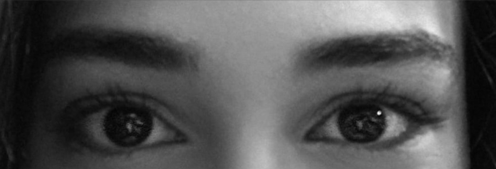
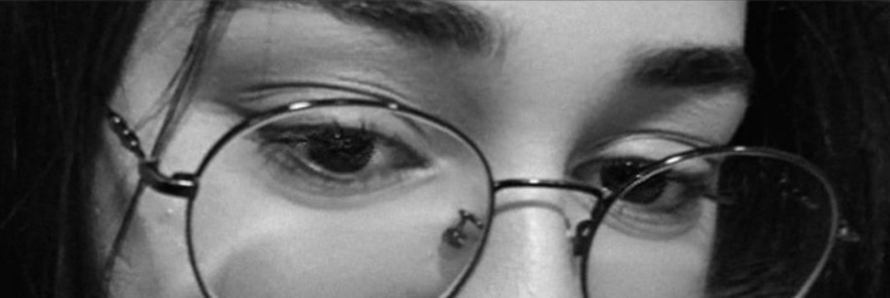
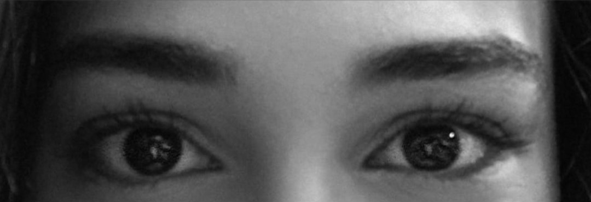
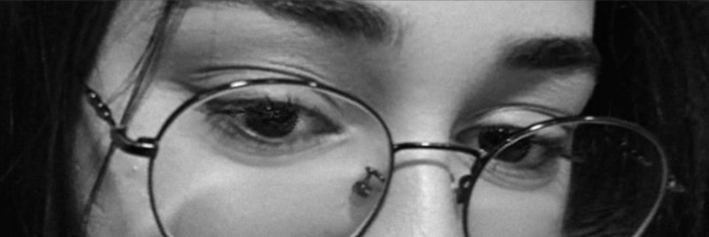

Bizim Hekayəmiz
TimerƏziz oxucu,daha dəqiq desəm sevgilim,qəlbimin sahibi.
Artıq 3 aydır ki sevgiliyik.
Həyatıma girən andan bəri hər şey dəyişdi
Sanki yaşamağa səbəb tapmışdım, ömrümün qalan hissəsini bir nəfərə həsr etmək istəyirdim.
Və bu hiss edirəm ki, bu hiss günü gündən daha çox möhkəmlənir,
sevgim hər gün bir əvvəlki gündən daha çox güclü olur.
Səni tanımağım, özümün tam qız halına rast gəlməyim sanki bir möcüzə idi, və bu cümlədəki möcüzə sən özünsən.
Sənə baxanda sanki güzgüdə özümü görmüş kimi hiss edirəm.
Hər dəfə deyəcəyimiz sözlər üst üstə düşəndə belə "bəli, həyatımı verəcək qadın budur" deyə qürurlanıram.
Həyatımda olabiləcək ən mükəmməl hadisəsən Nəzrin.
Yaxşı ki varımsan,yaxşı ki mənimsən.
Həyatımda ən çox sevdiyim şeylərdin biri bilirsənmi nədir? Səninlə olan anılara təkrar təkrar dönmək.
Sanki onları birinci dəfə yaşayarırammış kimi hissetmək.
Amma bu dəfə bir az fərqli olacaq.
Gəl biryerdə keçdiyimiz yolları, biriktirdiyimiz anıları bir də yaşayaq.
İyi yolculuklar oxucu.
20.09.2025...
Hər şey düşündüyündən daha çox əvvəl başladı. Akademiyaya ilk gələn gündən bəri parlayan gözlərin sevmişdim. Amma bir türlü bunu deyə bilmirdim. "Hə, indi deyərəm" deyəcəyim an qabağıma yox, "hələ dayan" mesajı gəlirdi sanki. Amma bunu sənə baxan baxışlarımda gizlədə bilmirdim. Bilinməsini, bundan sıxılmağını istəmirdim. Ona görə də sakitçə heyranlıqla izləyə bilirdim...
01.11.2025
1 oktyabr sevgili olarkən ilk dəfə eastcaf-a getdiyimiz gün... Çox xoşbəxt idim.Hər dəfə xatırlayanda sanki o günlərə geri dönürəm. Həmin gün həyatımın geri qalan hər saniyəsinin xoş keçməsinin başlanğıcı idi sanki. Qələbə çalmışdım. Səbr etdiyimə o qədər xoşbəxt idim ki. Heç vaxtı mübarizə apardıb, qazandığım qələbəyə görə bu qədər qürurlanmamışdım. Sonunda bir ildən çox gözlədiyim ana gəlib çatmışdım. Nəhayət özümü səndən uzaq tutaraq yox gözünün içinə baxaraq sevdiyimi deyə bilirdim. O gün stəkanın üstünə həyatımın sonuna qədər edəcəyim - səni sevəcəyim sözünü yazmışdım. Hər dəfə o stəkana baxanda sanki içim isinir.
Ay ışığına benzemiş aşk
"Sen, sen, sen baharımsın
Mayıs ayıma doğan güneş sen
Ben, ben, ben aşkınla boyandım, tut elimden
Gül, yine de sen gül
Bilemesem aşk sanatı zor
Güz gibi misal
Yağdı yağmur, üstüm başım çamur
Ama bu kalbin oldu şemsiyem
Aşk vurdu beni yine bi' mayısın sıcacık rüzgârlarıyla
Vurdu aşk yanaklarıma"
Səni sevmək, Ehzel' in bu misraları kimi hiss etdirirdi...
03.11.2025
Səni görən ilk gündən bəri bu mahnını sənə həsr etməyi arzulayırdım:
Amma senin ayrı bir havan var"
“Öyle kolay âşık olmam demişdim… amma gözlərin daha güclü çıxdı :)”
06.11.2025
Şəbəkə 25% imtahanı
Həmin gün gözlərimin parladığı o gün idi. Operasyon zamanı bir an sadəcə duruxmuşdum. Arxama çevrilib səni gördüyümdə, sanki güzgüyə baxırdım. O an bir birimiz üçün yaradıldığımıza bir daha əmin olmuşdum. Gözlərində parlayan işıq belə tanış gəlirdi. "Bir insan yarına nə qədər oxşaya bilər ki?"-sualıma cavab kimi görünürdün. O an həyatımı adayacağım insanın məhz kim olduğunu tapmışdım.
 



09.11.2025
Həyatımın ən böyük hədiyyəsi...
Bu şəkli aldığım gün...Bilirsən nə qədər xoşbəxt idim? İstədiyim xəyalıma çatmışdım. Sonsuzadək gözlərində itmə xəyalına. Hər səhər duranda telefonu açıb gözlərini görməkdən başqa heç bir arzum ola bilməzdi. Həmin gün o qədər telefonu yandırıb söndürürdüm ki. Uşaq kimi sevinirdim. Hər dəfə oyananda, gözlərinlə gözümü açıb, hər gecə gözlərinlə yatmağım mənə edə biləcəyin ən böyük hədiyyə idi. Həyatımın sonuna qədər bu arxafonu telefonumda saxlayacam və hər saata baxmağım telefonu açmağıma bahanə olacaq :)
11.11.2025
LEGO
Neçə vaxt idi səni görmürdüm. Çox darıxmışdım. Səni görmək üçün səbirsizlənirdim, amma təkcə darıxdığım üçün yox.O gün LEGO almışdım. Sürpriz etmək istəyirdim. Maraqlı bir aktivite edəcəkdik. Kafeyə oturub surprizim var dediyim an sənin də çantandan LEGO çıxdığını görüb çox şaşırmışdım. Əvvəlcə hardansa öyrəndiyini düşünmüşdüm amma ondan sonra ürəyimizin bir döyünməyini və bunun "yeganə" yox, sadəcə "ilk" tahminetmə olduğunu qəbul etmişdim :)
Gəncədən gələnsiz? ;)
"Faling love again and again..."
Təkrar-təkrar aşiq olmaq. Eynən bu sözlərlə izah edə bilərəm sevgimi. Yalnız SƏNİNLƏ olduğum zaman hər şeydən zövq alıram. Bu təkcə keçirdiyimiz zamanla əlaqəli deyil. Gözlərinə baxmaq kifayətdi mənə. Məkanım yanındırsa, sakitçilik, sükut belə fərqli hiss etdirir. Hər gün bir əvvəlki gündən daha çox sevirəm.
22.11.2025
The Main Enemy)
Ən böyük düşmənim...KFC...Bilirsən səni o qədər çox sevirəm ki hərdən KFC-ni belə qısqanırdım. Amma əmin ol səni sən KFC sevdiyin qədər, hətta dəfələrcə daha çox sevirəm.) Həmin günkü şirin söhbətlər hələdə ağlımadı. Sonra isə aşağı düşüb çoxlu gəzmişdik. Skamyada başımı dizlərinə qoyub uznananda necə safe place hissetdiyimi anlada bilmərəm. Sanki evimsən, doğmam, sanki 19 ildi səni tanıyırmışam kimi.Sanki ailəmdən bir parçasan. Qısa bir müddətdə canımı belə verəbiləcəyim qədər güvənəcəyim insana çevrilmən möcüzə kimi idi...

26.11.2025
Həmin gün akademiyadan cıxmışdıq. LEGO düzəldəndə sonra aşağı düşüb çoxlu şəkillər çəkdirmişdik. Heç vaxt sadəcə sadə şəkil çəkdirməkdən bu qədər əylənməmişdim. Sevdiyin insanla biryerdə olanda hərbirşey əyləncəli olurmuş. Həmin gün sənə bir dəfə daha aşiq olmuşdum. Aşağıda düşüb gitara çalıb oxuduğumuz an isə bir cütlük yaxınlaşmışdı. Nişanlı idilər. Bizdən bir mahnı oxumağımızı xahiş etmişdilər. Onlar getdikdə isə içimdə qəribə bir hiss var idi. Sanki gələcəkdəki bizlə rastlaşmışdıq.
29.11.2025
İlk Ay...
Və beləcə ilk ay tamamlanır...
Həyatımın ilk ən xoş ayı.
Sevgi dolu əyləncə dolu bir ay.
Sənlə tanışmamışdan qabaq sanki həyaımda bir şey çatmırdı.
Gəlişinlə ağ-qara həyatım əlvan rənglərə boyandı.
Nəhayət sevgini dadmışdım.
Bilirsən ,Nəzrin, sən həqiqətən fərqlisən.
Sanki kolluqların içindəki ətrafa rəng saçan qızılgül,
gecənin qaranlığında parlayan tayı-bərabəri olmayan ay kimisən.
Fərqlisən deyəndə bunu sadəcə bir sadə iltifat kimi qəbul etmə.
Həqiqətən insanlığın, xoşbəxtliyin, SEVGİNİN hələ də var olduğuna yeganə sübutumsan Nəzrin.
Sədaqətin, hüzurun var olduğuna yeganə sübut.
Sənə baxanda özümün əksini görürəm.
İlk ay o qədər tez və əyləncə dolu keçdi ki.
Hani sevdiklərinlərinlə zaman tez axır deyilir ya.
Bax onu yaşadım səninlə
Yaxşı ki varımsan...Yaxşı mənimsən.
06.12.2025
Əvəllər öz özümə düşünürdüm. Məni nə xoşbəxt edir. Sonra həvəslə o günləri sadalayırdım. Sonda hamsının sənlə olduğum günlər olduğunu anlayanda heç şaşırmadım. Anladım ki mənim ən gözəl günüm sənsən və səninlə olduğum hər an bu gün dəvam edir. Bilirsən, əslində mənim öz günəşim var.Hamınınkindan fərqli.mənim günəşim sənin gözlərindi. Hər an gözlərinə baxanda səmada bərq vuran günəşi görürəm. Onunla bilirəm ki gün hələ də dəvam edir. Hələ də yaşamağıma səbəb var.
07.12.2025
Ulduzlar Qısqanır
Günəş qısqanır sən güləndə
Gözlərin gözlərimə dəyəndə
Bircə kəlmə sevgilim deyəndə
Zaman susub səni dinləyir
Musiqini çox sevirəm. Onsuz həyatımı təsəvvür edə bilmirəm. Amma heç bir musiqi səsin kimi hissetdirmir. Mahnının hər bir notu yeni bir anını xatırladırdı. Hər bir notu düşünəndə xəyalımdakı qadının gülüşü gəlirdi ağlıma. Hər notda sükutu dindirən, gecə səmada parlayan ulduz kimi gözləri gəlirdi ağlıma. Məncə ulduzlar gözlərini qısqanmalıdır.Çünkü kainatı mən göydəki sonsuz ulduzlarda yox, məhz bir cüt ulduzda görürəm.
08.12.2025
Həmin gün favori günlərimdən biri idi. Səninlə söhbət edəndə o qədər sarırdı ki zamanın necə keçdiyini anlamamışdım. Soyuq olmasına baxmayaraq soyuq hiss etmirdim.Çünkü yanımda sən var idin.Qəlbim heç vaxtı bu qədər doğmalıq və istilik hiss etməmişdi. Söhbət etməsi və anlaması bu qədər rahat olduğum insanı tapmağım möcüzə idi. Baxış açımız o qədər eyni idi ki sanki 20 ildi səni tanıyırammış, səninlə böyüyürəmmiş kimi gəlirdi. Sanki qəlb doğma idi.Sanki qəlb fərqinə varmadan ehtiyacı olan yarını tapmışdı. Sonsuza qədər birlikdə olacağ qəlbi...Sanki ürək məhz bu an üçün döyünürmüş. Sanki 2 ildi hiss etmək istədiyi hiss buymuş...Nəhayət o həyəcan hissi, sevgi hissinə çevrilmişdi.
Sonunda evdəyəm... Eyni bu sözlər kimi hiss edirdim o gün. Doğmam, evim kimi.Bu hissi sözlərlə izah edə bilmərəm ama sanki inanmadığım bəxt bu dəfə mənim üzümə gülmüşdü. Həyatında heç nəyi ciddiyə almayan birisi, bu gün yaşadığı, məhz səninlə yaşadığı gün üçün şükür edirdi. Bəli, əvvəllər duaların sahibi olan qadın, indi şükürlərinin sahibi idi...
11.12.2025
Problərimin yoxa çıxdığı o mistik məkan)
Orası sənin yanındı.
Fərq eləmir akademiya olsun, cofeshop olsun, ya da sadəcə boş və səssiz bir küçə.
Sadəcə sən ol yetər.
Sən ol ki, ürəyim döyüntüsü sükutu pozsun.
Sən ol ki, soyuq gecədə ürəyim isinsiz.
Sən ol ki, yaşamağa səbəbim olsun...
27.12.2025
Yeni il
2026-cı il girir və mən yeni il-ə sənlə girirəm. Həyatımın möcüzəsi ilə. Həmin gün həyatımda keçirtdiyim ən mükəmməl yeni il idi. Özümü sanki 20 ildə şaxta babadan almaq istədiyim, ən çox dilədiyim hədiyyəmi almışdım kimi hiss edirdim. Səninlə qışın soyuğunda, isti əllərini tutub gəzmək... Uşaq kimi sevinirdim o gün. Yarmarkada səni itirərəm deyə çox qorxurdum)əlindən möhkəm möhkəm tutmuşdun. Yeni il girən günü isə burda deyildin. O an fişənglər atılanda səni arzu edirdim. Kaş bu saniyə yanımda olardın... "Kaş ən azından indi zəng edərdim" - dediyim an telefon zəng çalmışdı) Kim olacağını düşünməmişdim belə. Dərhaı teıefonu açdım. O günün verdiyi xoşbəxtliyi sözlərə izah edə bilmirəm. Yeni il-ə 1 yarım ildi girmək istədiyim insanla girirəm. Sanki bu dəfə fişənglər bizə görə atılırdı. Bu dəfə sevgimizi kutlayıdıq...
Ev...
Ev həmişə dörd divarla əhatə olunmuş məkanamı deyilir ?
Yoxsa bəlkə ev bir şəxsdi ?
Bir nəfərin baxışıdır ?
Hansı ki, gözlərində itəndə, çıxmağa qapı axratmırsan,
Orası ev sayılmırmı?
Eynən soba otağı isidən kimi qəlbin isidən şəxs ev sayıla bilməzmi?
Bəlkə də ev anlayışı deyildiyi kimi bir simvol deyil.
Ev divarla səni qoruya bilər.
Amma yaşatmaq...
Buna ancaq qəlbimin sahibi qadirdi.
06.01.2026
End of Yearning
Bu gün hələ də ağlımdadı.
Neçə vaxtdı səni görmürdüm.
Çox darıxmışdım.
Qucaqlayanda sanki içimdəki buzlar ərimişdi.
Sənə sarılıb ürəyinin ritmini, nəfəsinin səsini duymağım təkcə xoşbəxlik səbəbim idi o an.
Səsini eşidəndə belə içimə rahatçılıq çökür.
Hərdən düşünürəm, səndən qabaq həyatım necə olub?
Mən necə yaşaya bilmişəm?
Çünkü bundan sonra yaşaya bilmərəm.
Sənə çox bağlanmışam.
Səndən ayrı qala bilmərəm.
Səni itirmək düşüncəsi belə ürəyimi ağrıdır.
Məhz bu gün "Sənsiz Olmaz" -ı bir daha anlamışdım.
23.02.2025
20.01.2026
20.01.2026
25.01.2026
Həyatımı borclu olduğum o gün...
25 yanvar...Bu tarixi öz doğum günündən daha çox sevirəm. Məhz bu gün həyatımın mənasına çevrilmiş insan anadan olub. Hər şeyi bu günə borcluyam kim gəlir mənə. Bu tarix mənim üçün kalendarda sadəcə bir tarix, ya bir gün deyil. Bu gün mənə möcüzə kimi gəlir. Bir möcüzənin göz açması. Həmin gün planlar bir az düz getməmişdi.Amma sənin xoşbəxtliyini çox görmək istəyirdim. Həmin gün gecə saat 00:00 - da mənə zəng edəndə sanki içimdəki buzlar ərimişdi. Orda sənin yanında olmağı çox istəyirdim. Amma sanki qəlbim orda idi. Günün səninlə olan hissəsində sanki bəxt bizim üzümüzə gülürdü. Təkcə o gün yox, həyatıma girəndən bəri sanki şans mənbəyimə çevrilmisən. Sanki həyatıma girən andan bəri hıyatım tamamlanmışdı... O gün çox əylənmişdim. Uşaqlığımdan bəri ilk dəfə idi sənlə karuselə minmişdik. Başqa vaxt olsa idi bəlkə də istəməzdim. Amma sənin yanında olanda sanki içimdəki uşaq gülürdü. Özümü xoşbəxt hiss edirdim. Sanki uşaqlığıma qayıtmışdım. Çünkü həyatda hər şeydən daha çox güvəndiyim evimdə idim sanki...
Yeganə hüzurum
Yeganə əyləncəm
01.02.2026
Sparrow
Bu gün maraqlı bir kafeyə getmişdik.Kafeni ən çox maraqlı edən şey içəridə itin olması idi. Kafe fav kafelərim siyahısına əlavə olundu, gün isə ən sevdiyim günlər siyahısına. Ondan sonra içərişəhərə düştük.Əlimdə olsa idi səhərə qədər o günü dəvam etdirərdim. Sadə bir günü o qədər əyləncəli bir günə çevirmişdikki. Bəlkə də əyləncəli olan məkan yox yanındakı insandır. İstəmsizcə həmişə üzünün güldüyü insan.Yanında olanda sadəcə xoşbəxt olduğun, səbəbizcə.


08.02.2026
"My Treasure"
Bəzən həyatda sadəcə durub əlində olana nəzər yetirməlisən.Necə böyük bir xəzinəyə sahib olduğunu, heç bir materiyanın ödəyəməyəcəyi bir dəyər. Nəzrin, sən mənim ən böyük xəzinəmsən. Həyatda sənə görə harcayamayacağım insan, qurban verə bilməyəcəyim heç bir xəyalım yoxdur. Mənim tək xəyalım sənsən.
100-lərlə şəkil, 100-lərlə anı.Bir qutunu bir rəfə çevirəcək qədər, hər biri bir xatirıni canlandıran əşya.
Yanında olanda hər şeyi əyləncəyə çevirən bir, azca belə olsa sıxılmadığın, ən əsasda səni sevən birsinin həyatında olması insan üçün ən böyük hədiyyədir.
Nəzrin, həyatımda sən varsan deyə özümü çox xoşbəxt hiss edirəm.
Bu qədər anını bu qədər xatirəni yaşatdığın və ürəyini mənə güvəndiyin üçün çox sağ ol.
O ürəyi sonsuza kimi qoruyacam. O əlləri sonsuza kimi tutacam o gözlərə sonsuza qədər baxacam və baxdığım üçün həmişə qürur duyacam.
Qoy bu sayt da mənim sənə sözümün sonsuza qədər şahidi olsun.
Yaxşı ki varımsan, yaxşı ki mənimsən.
"The End"
Əziz yolcu :)
Beləliklə bir səyahətin daha sonuna gəldik. Hələlik bir son. Hələ gələcəkdə daha çox macəralar, daha yeni xatirələr və əvəzolunmaz hisslər yaşayacayıq.
Bu yolda sizə eşlik etmək mənim üçün bir şərəf idi.Bir də keçmişə gedib necə də mükəmməl olduğumuzu və tam bir birimiz üçün yaradıldığımızı xatırlamaq çox qürurlandırıcı idi.
Yaşadığım bu mükəmməl 3 ay üçün təşəkkür edirəm. Mənimlə gələcəyə sonsuz bir yolculuğa varmısın? ) Çünkü mən yaddaşımı itirib bu hissləri bir daha yaşamaq istəyərdim.
Yaxşı səni tanımışam.Yaxşı ki sən)
14 fevral sevgililər günü bayramın kutlu olsun sevgilim❤️.